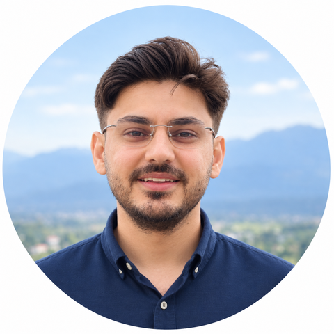

|
 |
Haider AliResearch Assistant, Deep Learning Lab (DLL), NCAI, NUST, Islamabad, PakistanMachine Learning Engineer, Dcube (US-based company), Islamabad, Pakistan Prev: Research Intern, Computer Vision and Mixed Reality Lab, RheinMain University, Germany (DAAD) Email: hali.msai22seecs[at]seecs[dot]edu[dot]pk CV | Google Scholar | Github | LinkedIn | ORCID |
Research Interests
- Computer Vision: detection, recognition and segmentation
- Generative (Diffusion) Models and Image Super-Resolution
- Robust and Uncertainty-Aware Vision
- Multimodal Learning and Sensor Fusion
- Efficient and Real-Time Models (distillation, edge deployment)
Selected Work
-
Real-Time Detection and Recognition on Camera Streams | Dcube, 2025 – Ongoing
Built and deployed an end-to-end system that detects and recognizes license plates, faces, phone usage and objects from CCTV streams, optimized for on-device inference under tight latency and compute constraints.
[Demo] -
Transformer Super-Resolution | IGARSS 2025, 2026
Swin-based and multi-image transformers with non-local sparse attention and wavelet-domain losses. The multi-image model is state of the art on the PROBA-V benchmark.
[Multi-image SR (2026)] [RGB SR (2025)] -
Robust Multimodal Segmentation | 2026 – Ongoing
A two-stream SAR–optical segmentation network trained on clear-sky images only, with a SAR-only head, evaluated on real cloud cover and several benchmarks. Manuscript in preparation. -
Uncertainty-Aware Diffusion Models | 2026 – Ongoing
Conformal prediction, wavelet-domain losses and multi-modality alignment for diffusion-based super-resolution that reports where its output can be trusted. Manuscript in preparation. -
Offline Signature Verification and Generation | NUST, 2023 – 2024
GANs that generate forged signatures to stress-test verifiers, and GeoCT-SigNet, a contourlet-based hybrid CNN–Transformer verifier (under review).
[GeoCT-SigNet] [Code] -
Knowledge Distillation for a Compact Text Embedder | Dcube, 2025
Led a team of five to distil a compact embedding model for on-premise enterprise search, keeping most of the teacher's quality at much lower latency and cost.
[Code] News
- Oct 2026: Guest lecturer (6 credit hours) for CS-250 Data Structures and Algorithms, NUST SEECS.
- Sep 2026: Selected for the IEEE GRSS IADF School on Computer Vision for Earth Observation, Italy.
- Aug 2026: Poster presentation at IEEE IGARSS 2026, Washington, D.C., USA. The paper is now published in the proceedings.
- Jan 2026: Joined the Deep Learning Lab (DLL), NCAI, NUST as a Research Assistant.
- Aug 2025: Poster presentation at IEEE IGARSS 2025, Brisbane, Australia.
- Jan 2025: Joined Dcube as a Machine Learning Engineer.
- May 2024: Awarded a DAAD grant for research on super-resolution; summer 2024 research stay in Wiesbaden, Germany.
Publications
Awards & Honors
- Selected for the IEEE GRSS IADF School on Computer Vision for Earth Observation, University of Sannio, Italy (Sep 2026)
- DAAD research grant, German Academic Exchange Service; summer 2024 research stay in Wiesbaden, Germany
- Gold Medal for the highest GPA in the Software Engineering batch of 2017 (Jan 2022)
- Winner of the Pakistan Information Technology Board Start-up competition (June 2021)
- Winner of the Tech Marathon coding competition organized by USAID (Sep 2019)
Technical Skills
- Computer Vision: Object detection and recognition (YOLO), semantic segmentation, super-resolution, diffusion models, GANs, vision transformers, knowledge distillation
- Frameworks & Libraries: PyTorch, TensorFlow, Keras, OpenCV, timm, MMSegmentation, Hugging Face, Scikit-Learn
- Languages: Python, C++, SQL, JavaScript, Java
- MLOps & Tools: CUDA, multi-GPU training, Docker, Conda, Git, Linux, FastAPI, AWS (EC2, S3, Lambda)
- Remote Sensing: Sentinel-1/2, SAR, rasterio, GDAL, QGIS
Teaching
- Guest Lecturer (6 credit hours), CS-250 Data Structures and Algorithms, NUST SEECS (Oct 2026)
- Computer Vision Lab Instructor, Advanced AI Bootcamp, NUST (Oct 2023): object detection and image segmentation

|
Non-Local Sparse Attention Based Multi-Image Super-Resolution Haider Ali, Maxim Dolgich, Ulrich Schwanecke, Adrian Ulges, Faisal Shafait IEEE International Geoscience and Remote Sensing Symposium (IGARSS), 2026, Washington, D.C., USA (Poster), pp. 2383–2388 [Page] [Paper (DOI)] [Code] |

|
GeoCT-SigNet: A Geometry-Aware Hybrid CNN–Transformer Network for Offline Signature Verification Haider Ali, Momina Moetesum, Adnan Ul-Hasan, Faisal Shafait, M. Imran Malik Under review in IEEE Access, 2026 [Page] [Preprint] [Code] |

|
RGB Super-Resolution for Multispectral Remote Sensing Images Haider Ali, Fabian Stahl, Maxim Dolgich, Ulrich Schwanecke, Adrian Ulges, Faisal Shafait IEEE International Geoscience and Remote Sensing Symposium (IGARSS), 2025, Brisbane, Australia (Poster) [Page] [Paper] [Code] |
Looking for my remote sensing and Earth observation work? See my main portfolio.
Design adapted from Prof. Sunghoon Im, DGIST.